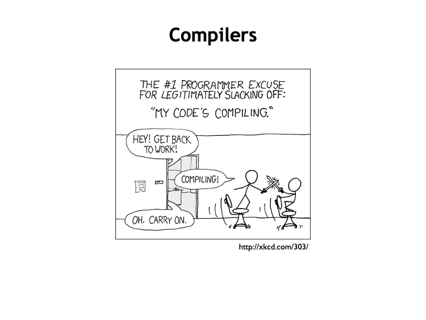
Interpretation and Compilation
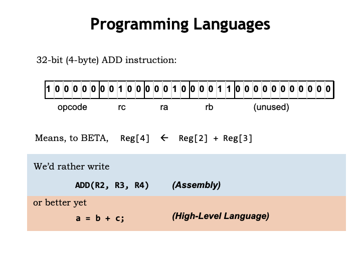
Today weʼre going to talk about how to translate high-level languages into code that computers can execute.
So far weʼve seen the Beta ISA, which includes instructions that control the datapath operations performed on 32-bit data stored in the registers. There are also instructions for accessing main memory and changing the program counter. The instructions are formatted as opcode, source, and destination fields that form 32-bit values in main memory.
To make our lives easier, we developed assembly language as a way of specifying sequences of instructions. Each assembly language statement corresponds to a single instruction. As assembly language programmers, weʼre responsible for managing which values are in registers and which are in main memory, and we need to figure out how to break down complicated operations, e.g., accessing an element of an array, into the right sequence of Beta operations.
We can go one step further and use high-level languages to describe the computations we want to perform. These languages use variables and other data structures to abstract away the details of storage allocation and the movement of data to and from main memory. We can just refer to a data object by name and let the language processor handle the details. Similarly, weʼll write expressions and other operators such as assignment (=) to efficiently describe what would require many statements in assembly language.
Today weʼre going to dive into how to translate high-level language programs into code that will run on the Beta.
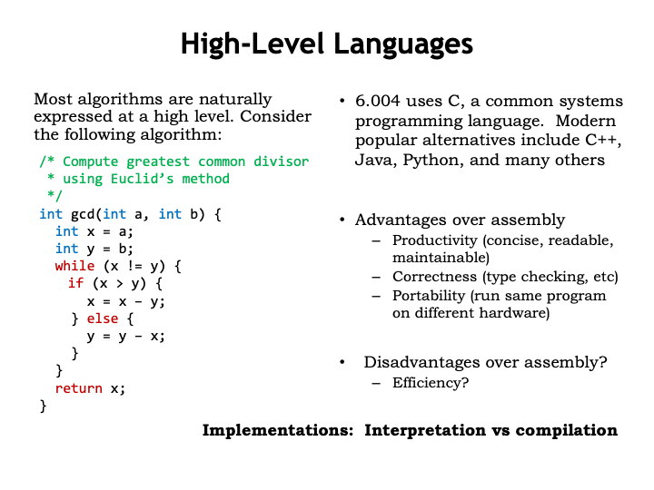
Here we see Euclidʼs algorithm for determining the greatest common divisor of two numbers, in this case the algorithm is written in the C programming language. Weʼll be using a simple subset of C as our example high-level language. Please see the brief overview of C in the Handouts section if youʼd like an introduction to C syntax and semantics. C was developed by Dennis Ritchie at AT&T Bell Labs in the late 60ʼs and early 70ʼs to use when implementing the Unix operating system. Since that time many new high-level languages have been introduced providing modern abstractions like object-oriented programming along with useful new data and control structures.
Using C allows us describe a computation without referring to any of the details of the Beta ISA like registers, specific Beta instructions, and so on. The absence of such details means there is less work required to create the program and makes it easier for others to read and understand the algorithm implemented by the program.
There are many advantages to using a high-level language. They enable programmers to be very productive since the programs are concise and readable. These attributes also make it easy to maintain the code. Often it is harder to make certain types of mistakes since the language allows us to check for silly errors like storing a string value into a numeric variable. And more complicated tasks like dynamically allocating and deallocating storage can be completely automated. The result is that it can take much less time to create a correct program in a high-level language than it would it when writing in assembly language.
Since the high-level language has abstracted away the details of a particular ISA, the programs are portable in the sense that we can expect to run the same code on different ISAs without having to rewrite the code.
What do we lose by using a high-level language? Should we worry that weʼll pay a price in terms of the efficiency and performance we might get by crafting each instruction by hand? The answer depends on how we choose to run high-level language programs. The two basic execution strategies are interpretation and compilation.
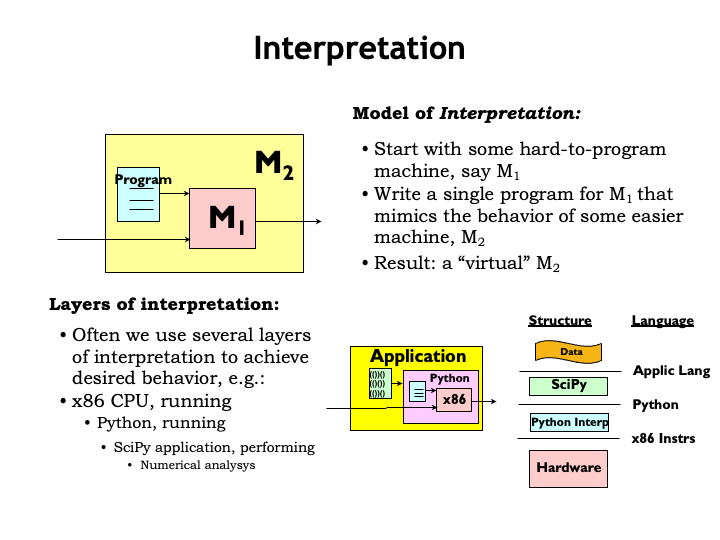
To interpret a high-level language program, weʼll write a special program called an interpreter that runs on the actual computer, M1. The interpreter mimics the behavior of some abstract easy-to-program machine M2 and for each M2 operation executes sequences of M1 instructions to achieve the desired result. We can think of the interpreter along with M1 as an implementation of M2, i.e., given a program written for M2, the interpreter will, step-by-step, emulate the effect of M2 instructions.
We often use several layers of interpretation when tackling computation tasks. For example, an engineer may use her laptop with an Intel CPU to run the Python interpreter. In Python, she loads the SciPy toolkit, which provides a calculator-like interface for numerical analysis for matrices of data. For each SciPy command, e.g., “find the maximum value of a dataset”, the SciPy tool kit executes many Python statements, e.g., to loop over each element of the array, remembering the largest value. For each Python statement, the Python interpreter executes many x86 instructions, e.g., to increment the loop index and check for loop termination. Executing a single SciPy command may require executing of tens of Python statements, which in turn each may require executing hundreds of x86 instructions. The engineer is very happy she didnʼt have to write each of those instructions herself!
Interpretation is an effective implementation strategy when performing a computation once, or when exploring which computational approach is most effective before making a more substantial investment in creating a more efficient implementation.
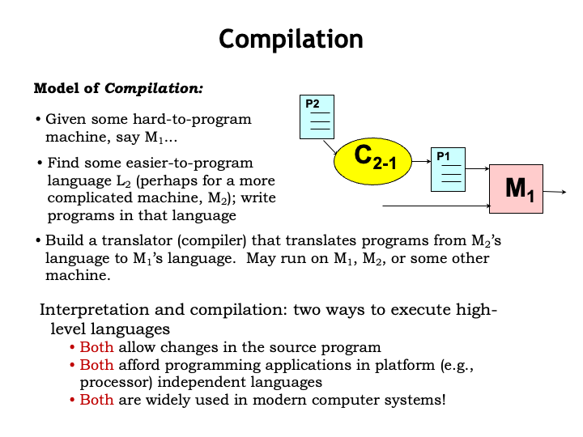
Weʼll use a compilation implementation strategy when we have computational tasks that we need to execute repeatedly and hence we are willing to invest more time up-front for more efficiency in the long-term.
In compilation, we also start with our actual computer M1. Then weʼll take our high-level language program P2 and translate it statement-by-statement into a program for M1. Note that weʼre not actually running the P2 program. Instead weʼre using it as a template to create an equivalent P1 program that can execute directly on M1. The translation process is called compilation and the program that does the translation is called a compiler.
We compile the P2 program once to get the translation P1, and then weʼll run P1 on M1 whenever we want to execute P2. Running P1 avoids the overhead of having to process the P2 source and the costs of executing any intervening layers of interpretation. Instead of dynamically figuring out the necessary machine instructions for each P2 statement as itʼs encountered, in effect weʼve arranged to capture that stream of machine instructions and save them as a P1 program for later execution. If weʼre willing to pay the up-front costs of compilation, weʼll get more efficient execution.
And, with different compilers, we can arrange to run P2 on many different machines — M2, M3, etc. — without having rewrite P2.
So we now have two ways to execute a high-level language program: interpretation and compilation. Both allow us to change the original source program. Both allow us to abstract away the details of the actual computer weʼll use to run the program. And both strategies are widely used in modern computer systems!
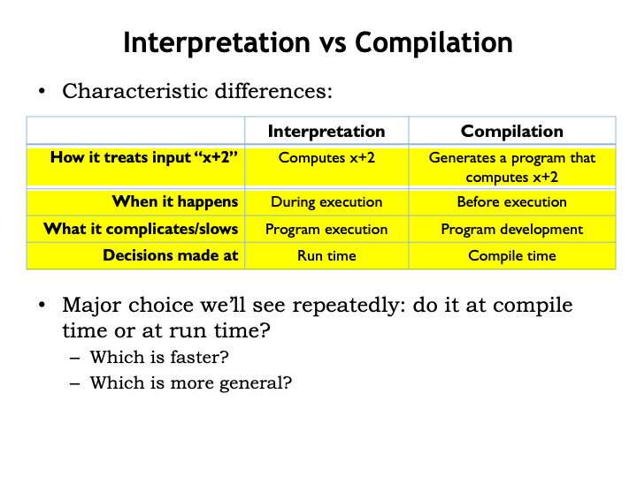
Letʼs summarize the differences between interpretation and compilation.
Suppose the statement “x+2” appears in the high-level program. When the interpreter processes this statement it immediately fetches the value of the variable x and adds 2 to it. On the other hand, the compiler would generate Beta instructions that would LD the variable x into a register and then ADD 2 to that value.
The interpreter is executing each statement as itʼs processed and, in fact, may process and execute the same statement many times if, e.g., it was in a loop. The compiler is just generating instructions to be executed at some later time.
Interpreters have the overhead of processing the high-level source code during execution and that overhead may be incurred many times in loops. Compilers incur the processing overhead once, making the eventual execution more efficient. But during development, the programmer may have to compile and run the program many times, often incurring the cost of compilation for only a single execution of the program. So the compile-run-debug loop can take more time.
The interpreter is making decisions about the data type of x and the type of operations necessary at run time, i.e., while the program is running. The compiler is making those decisions during the compilation process.
Which is the better approach? In general, executing compiled code is much faster than running the code interpretively. But since the interpreter is making decisions at run time, it can change its behavior depending, say, on the type of the data in the variable X, offering considerable flexibility in handling different types of data with the same algorithm. Compilers take away that flexibility in exchange for fast execution.
Compiling Expressions
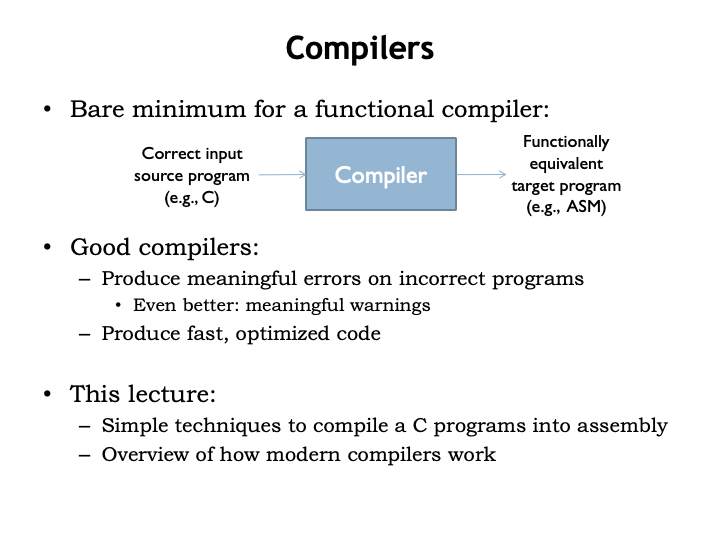
A compiler is a program that translates a high-level language program into a functionally equivalent sequence of machine instructions, i.e., an assembly language program.
A compiler first checks that the high-level program is correct, i.e., that the statements are well formed, the programmer isnʼt asking for nonsensical computations — e.g., adding a string value and an integer — or attempting to use the value of a variable before it has been properly initialized. The compiler may also provide warnings when operations may not produce the expected results, e.g., when converting from a floating-point number to an integer, where the floating-point value may be too large to fit in the number of bits provided by the integer.
If the program passes scrutiny, the compiler then proceeds to generate efficient sequences of instructions, often finding ways to rearrange the computation so that the resulting sequences are shorter and faster. Itʼs hard to beat a modern optimizing compiler at producing assembly language, since the compiler will patiently explore alternatives and deduce properties of the program that may not be apparent to even diligent assembly language programmers.
In this section, weʼll look at a simple technique for compiling C programs into assembly. Then, in the next section, weʼll dive more deeply into how a modern compiler works.
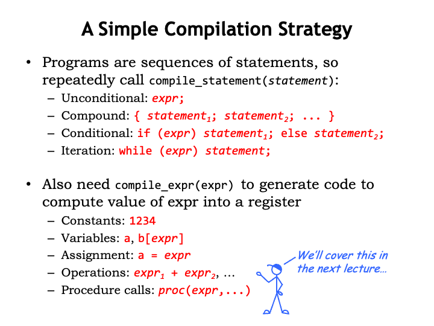
There are two main routines in our simple compiler: compile_statement and compile_expr. The job of compile_statement is to compile a single statement from the source program. Since the source program is a sequence of statements, weʼll be calling compile_statement repeatedly.
Weʼll focus on the compilation technique for four types of statements. An unconditional statement is simply an expression thatʼs evaluated once. A compound statement is simply a sequence of statements to be executed in turn. Conditional statements, sometimes called “if statements”, compute the value of an test expression, e.g., a comparison such as “A < B”. If the test is true then statement1 is executed, otherwise statement2 is executed. Iteration statements also contain a test expression. In each iteration, if the test true, then the statement is executed, and the process repeats. If the test is false, the iteration is terminated.
The other main routine is compile_expr whose job it is to generate code to compute the value of an expression, leaving the result in some register. Expressions take many forms:
* simple constant values * values from scalar or array variables, * assignment expressions that compute a value and then store the result in some variable, * unary or binary operations that combine the values of their operands with the specified operator. Complex arithmetic expressions can be decomposed into sequences of unary and binary operations.And, finally, procedure calls, where a named sequence of statements will be executed with the values of the supplied arguments assigned as the values for the formal parameters of the procedure. Compiling procedures and procedure calls is a topic that weʼll tackle next lecture since there are some complications to understand and deal with.
Happily, compiling the other types of expressions and statements is straightforward, so letʼs get started.
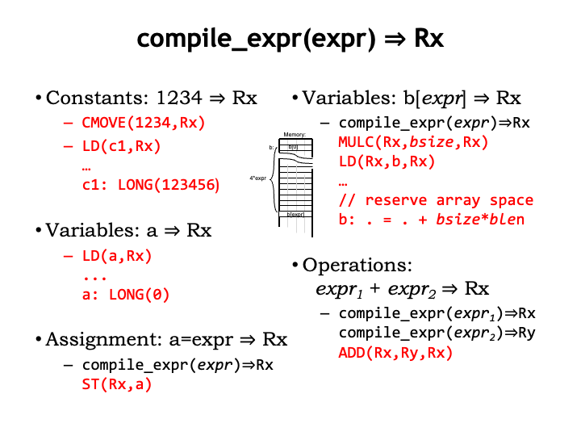
What code do we need to put the value of a constant into a register? If the constant will fit into the 16-bit constant field of an instruction, we can use CMOVE to load the sign-extended constant into a register. This approach works for constants between -32768 and +32767. If the constant is too large, itʼs stored in a main memory location and we use a LD instruction to get the value into a register.
Loading the value of a variable is much the same as loading the value of a large constant: we use a LD instruction to access the memory location that holds the value of the variable.
Performing an array access is slightly more complicated: arrays are stored as consecutive locations in main memory, starting with index 0. Each array element occupies some fixed number bytes. So we need code to convert the array index into the actual main memory address for the specified array element.
We first invoke compile_expr to generate code that evaluates the index expression and leaves the result in Rx. That will be a value between 0 and the size of the array minus 1. Weʼll use a LD instruction to access the appropriate array entry, but that means we need to convert the index into a byte offset, which we do by multiplying the index by bsize, the number of bytes in one element. If b was an array of integers, bsize would be 4. Now that we have the byte offset in a register, we can use LD to add the offset to the base address of the array computing the address of the desired array element, then load the memory value at that address into a register.
Assignment expressions are easy: invoke compile_expr to generate code that loads the value of the expression into a register, then generate a ST instruction to store the value into the specified variable.
Arithmetic operations are pretty easy too: use compile_expr to generate code for each of the operand expressions, leaving the results in registers. Then generate the appropriate ALU instruction to combine the operands and leave the answer in a register.
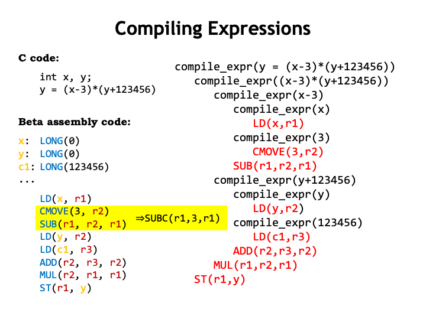
Letʼs look at example to see how all this works. Here have an assignment expression that requires a subtract, a multiply, and an addition to compute the required value.
Letʼs follow the compilation process from start to finish as we invoke compile_expr to generate the necessary code.
Following the template for assignment expressions from the previous page, we recursively call compile_expr to compute value of the right-hand-side of the assignment.
Thatʼs a multiply operation, so, following the Operations template, we need to compile the left-hand operand of the multiply.
Thatʼs a subtract operation, so, we call compile_expr again to compile the left-hand operand of the subtract.
Aha, we know how to get the value of a variable into a register. So we generate a LD instruction to load the value of x into r1.
The process weʼre following is called recursive descent. Weʼve used recursive calls to compile_expr to process each level of the expression tree. At each recursive call the expressions get simpler, until we reach a variable or constant, where we can generate the appropriate instruction without descending further. At this point weʼve reach a leaf of the expression tree and weʼre done with this branch of the recursion.
We now need to get the value of the right-hand operand of the subtract into a register. In case itʼs a small constant, so we generate a CMOVE instruction.
Now that both operand values are in registers, we return to the subtract template and generate a SUB instruction to do the subtraction. We now have the value for the left-hand operand of the multiply in r1.
We follow the same process for the right-hand operand of the multiply, recursively calling compile_expr to process each level of the expression until we reach a variable or constant. Then we return up the expression tree, generating the appropriate instructions as we go, following the dictates of the appropriate template from the previous slide.
The generated code is shown on the left of the slide. The recursive-descent technique makes short work of generating code for even the most complicated of expressions.
Thereʼs even opportunity to find some simple optimizations by looking at adjacent instructions. For example, a CMOVE followed by an arithmetic operation can often be shorted to a single arithmetic instruction with the constant as its second operand. These local transformations are called peephole optimizations since weʼre only considering just one or two instructions at a time.
Compling Statements
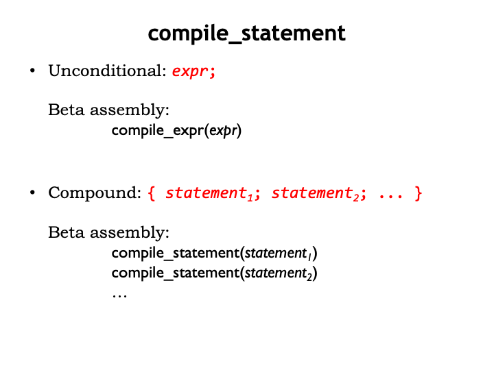
Now letʼs turn our attention to compile_statement.
The first two statement types are pretty easy to handle. Unconditional statements are usually assignment expressions or procedure calls. Weʼll simply ask compile_expr to generate the appropriate code.
Compound statements are equally easy. Weʼll recursively call compile_statement to generate code for each statement in turn. The code for statement_2 will immediately follow the code generated for statement_1. Execution will proceed sequentially through the code for each statement.
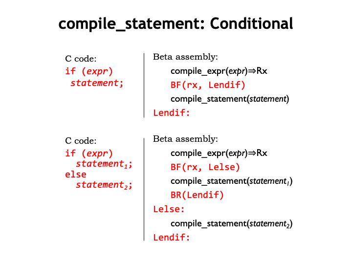
Here we see the simplest form the conditional statement, where we need to generate code to evaluate the test expression and then, if the value in the register is FALSE, skip over the code that executes the statement in the THEN clause. The simple assembly-language template uses recursive calls to compile_expr and compile_statement to generate code for the various parts of the IF statement.
The full-blown conditional statement includes an ELSE clause, which should be executed if the value of the test expression is FALSE. The template uses some branches and labels to ensure the course of execution is as intended.
You can see that the compilation process is really just the application of many small templates that break the code generation task down step-by-step into smaller and smaller tasks, generating the necessary code to glue all the pieces together in the appropriate fashion.
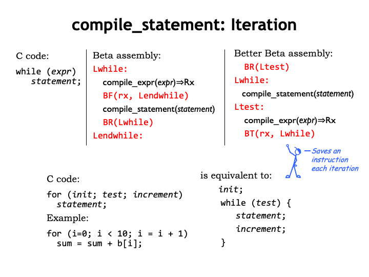
And hereʼs the template for the WHILE statement, which looks a lot like the template for the IF statement with a branch at the end that causes the generated code to be re-executed until the value of the test expression is FALSE.
With a bit of thought, we can improve on this template slightly. Weʼve reorganized the code so that only a single branch instruction (BT) is executed each iteration, instead of the two branches (BF, BR) per iteration in the original template. Not a big deal, but little optimizations to code inside a loop can add up to big savings in a long-running program.
Just a quick comment about another common iteration statement, the FOR loop. The FOR loop is a shorthand way of expressing iterations where the loop index (“i” in the example shown) is run through a sequence of values and the body of the FOR loop is executed once for each value of the loop index.
The FOR loop can be transformed into the WHILE statement shown here, which can then be compiled using the templates shown above.
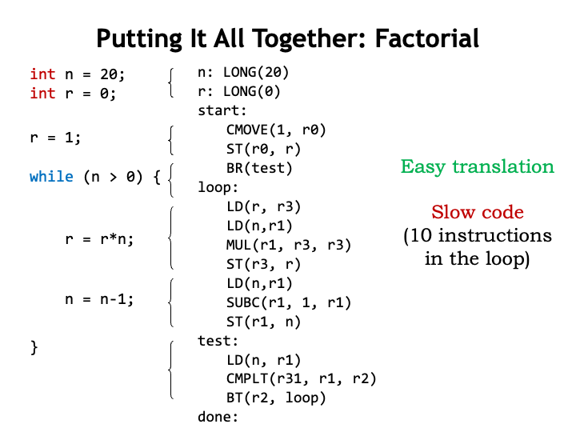
In this example, weʼve applied our templates to generate code for the iterative implementation of the factorial function that weʼve seen before. Look through the generated code and youʼll be able to match code fragments with the templates from last couple of slides. Itʼs not the most efficient code, but not bad given the simplicity of the recursive-descent approach for compiling high-level programs.
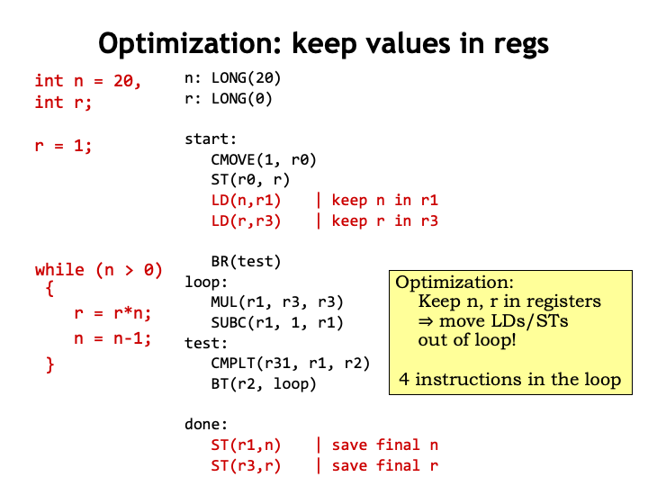
Itʼs a simple matter to modify the recursive-descent process to accommodate variable values that are stored in dedicated registers rather than in main memory. Optimizing compilers are quite good at identifying opportunities to keep values in registers and hence avoid the LD and ST operations needed to access values in main memory. Using this simple optimization, the number of instructions in the loop has gone from 10 down to 4. Now the generated code is looking pretty good!
But rather than keep tweaking the recursive-descent approach, letʼs stop here. In the next segment, weʼll see how modern compilers take a more general approach to generating code. Still though, the first time I learned about recursive descent, I ran home to write a simple implementation and marveled at having authored my own compiler in an afternoon!
Compiler Frontend
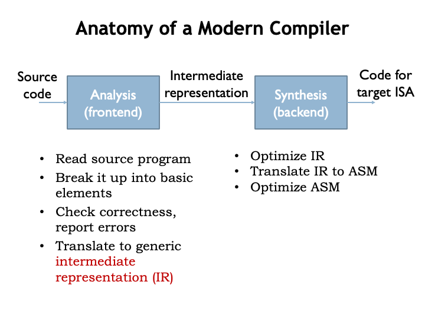
A modern compiler starts by analyzing the source program text to produce an equivalent sequence of operations expressed in a language — and machine-independent intermediate representation (IR). The analysis, or frontend, phase checks that program is well-formed, i.e., that the syntax of each high-level language statement is correct. It understands the meaning (semantics) of each statement. Many high-level languages include declarations of the type — e.g., integer, floating point, string, etc. — of each variable, and the frontend verifies that all operations are correctly applied, ensuring that numeric operations have numeric-type operands, string operations have string-type operands, and so on. Basically the analysis phase converts the text of the source program into an internal data structure that specifies the sequence and type of operations to be performed.
Often there are families of frontend programs that translate a variety of high-level languages (e.g, C, C++, Java) into a common IR.
The synthesis, or backend, phase then optimizes the IR to reduce the number of operations that will be executed when the final code is run. For example, it might find operations inside of a loop that are independent of the loop index and can moved outside the loop, where they are performed once instead of repeatedly inside the loop. Once the IR is in its final optimized form, the backend generates code sequences for the target ISA and looks for further optimizations that take advantage of particular features of the ISA. For example, for the Beta ISA we saw how a CMOVE followed by an arithmetic operation can be shorted to a single operation with a constant operand.
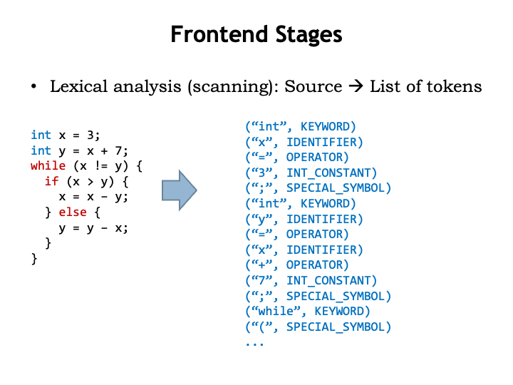
The analysis phase starts by scanning the source text and generating a sequence of token objects that identify the type of each piece of the source text. While spaces, tabs, newlines, and so on were needed to separate tokens in the source text, theyʼve all been removed during the scanning process. To enable useful error reporting, token objects also include information about where in the source text each token was found, e.g., the file name, line number, and column number. The scanning phase reports illegal tokens, e.g., the token “3x” would cause an error since in C it would not be a legal number or a legal variable name.
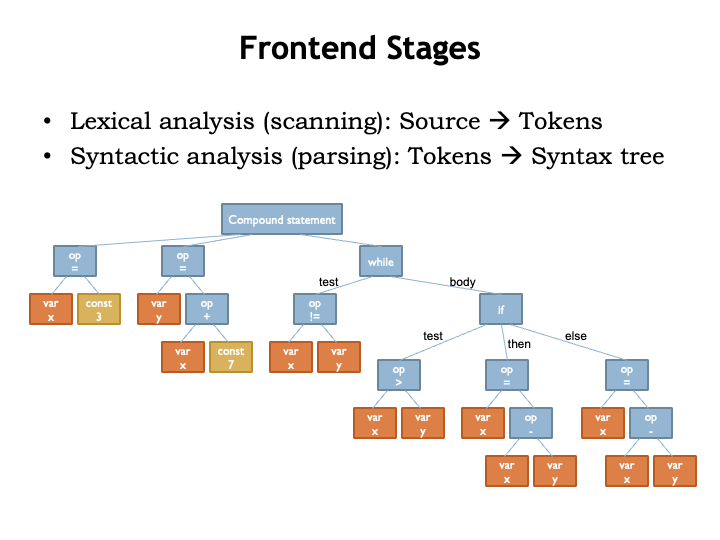
The parsing phase processes the sequence of tokens to build the syntax tree, which captures the structure of the original program in a convenient data structure. The operands have been organized for each unary and binary operation. The components of each statement have been found and labeled. The role of each source token has been determined and the information captured in the syntax tree.
Compare the labels of the nodes in the tree to the templates we discussed in the previous segment. We can see that it would be easy to write a program that did a depth-first tree walk, using the label of each tree node to select the appropriate code generation template. We wonʼt do that quite yet since thereʼs still some work to be done analyzing and transforming the tree.
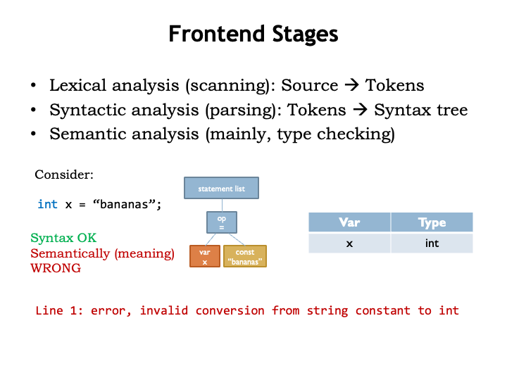
The syntax tree makes it easy to verify that the program is semantically correct, e.g., to check that the types of the operands are compatible with the requested operation.
For example, consider the statement x = “bananas”. The syntax of the assignment operation is correct: thereʼs a variable on the left-hand side and an expression on the right-hand side. But the semantics is not correct, at least in the C language! By looking in its symbol table to check the declared type for the variable x (int) and comparing it to the type of the expression (string), the semantic checker for the “op =” tree node will detect that the types are not compatible, i.e., that we canʼt store a string value into an integer variable.
When the semantic analysis is complete, we know that the syntax tree represents a syntactically correct program with valid semantics, and weʼve finished converting the source program into an equivalent, language-independent sequence of operations.
Optimizations
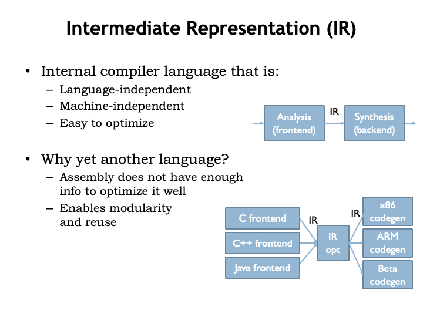
The syntax tree is a useful intermediate representation (IR) that is independent of both the source language and the target ISA. It contains information about the sequencing and grouping of operations that isnʼt apparent in individual machine language instructions. And it allows frontends for different source languages to share a common backend targeting a specific ISA. As weʼll see, the backend processing can be split into two sub-phases. The first performs machine-independent optimizations on the IR. The optimized IR is then translated by the code generation phase into sequences of instructions for the target ISA.
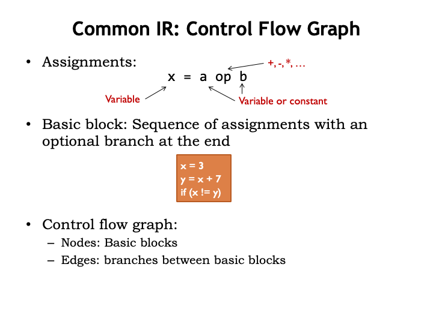
A common IR is to reorganize the syntax tree into whatʼs called a control flow graph (CFG). Each node in the graph is a sequence of assignment and expression evaluations that ends with a branch. The nodes are called basic blocks and represent sequences of operations that are executed as a unit: once the first operation in a basic block is performed, the remaining operations will also be performed without any other intervening operations. This knowledge lets us consider many optimizations, e.g., temporarily storing variable values in registers, that would be complicated if there was the possibility that other operations outside the block might also need to access the variable values while we were in the middle of this block.
The edges of the graph indicate the branches that take us to another basic block.
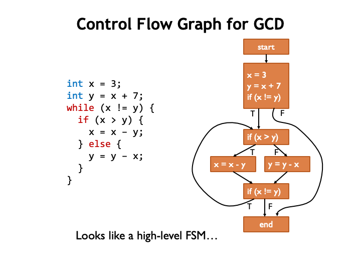
For example, hereʼs the CFG for GCD.
If a basic block ends with a conditional branch, there are two edges, labeled “T” and “F” leaving the block that indicate the next block to execute depending on the outcome of the test. Other blocks have only a single departing arrow, indicating that the block always transfers control to the block indicated by the arrow.
Note that if we can arrive at a block from only a single predecessor block, then any knowledge we have about operations and variables from the predecessor block can be carried over to the destination block. For example, if the “if (x > y)” block has generated code to load the values of x and y into registers, both destination blocks can use that information and use the appropriate registers without having to generate their own LDs.
But if a block has multiple predecessors, such optimizations are more constrained: we can only use knowledge that is common to *all* the predecessor blocks.
The CFG looks a lot like the state transition diagram for a high-level FSM!
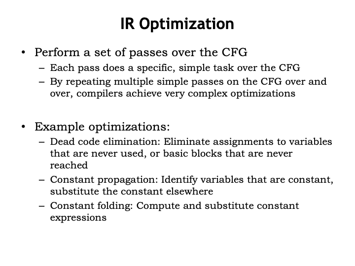
Weʼll optimize the IR by performing multiple passes over the CFG. Each pass performs a specific, simple optimization. Weʼll repeatedly apply the simple optimizations in multiple passes, until the we canʼt find any further optimizations to perform. Collectively, the simple optimizations can combine to achieve very complex optimizations.
Here are some example optimizations:
We can eliminate assignments to variables that are never used and basic blocks that are never reached. This is called dead code elimination.
In constant propagation, we identify variables that have a constant value and substitute that constant in place of references to the variable.
We can compute the value of expressions that have constant operands. This is called constant folding.
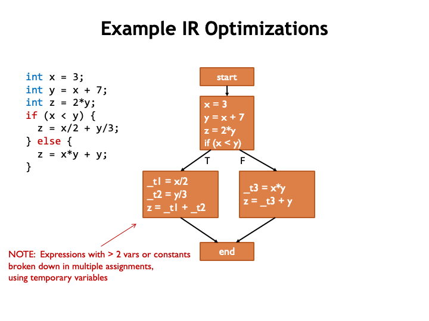
To illustrate how these optimizations work, consider this slightly silly source program and its CFG. Note that weʼve broken down complicated expressions into simple binary operations, using temporary variable names (e.g, “_t1”) to name the intermediate results.
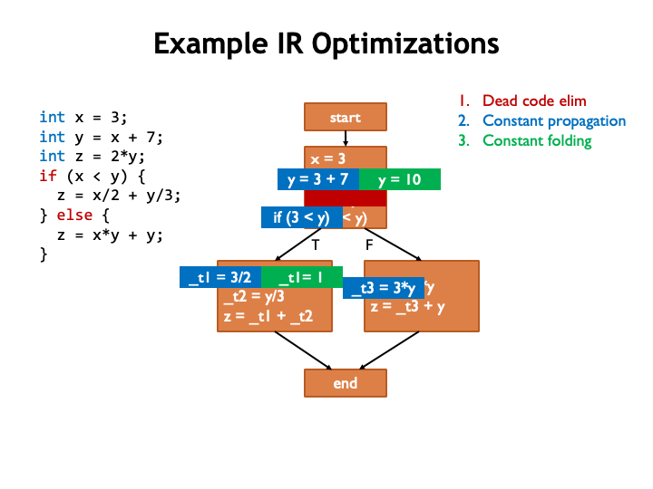
Letʼs get started!
The dead code elimination pass can remove the assignment to Z in the first basic block since Z is reassigned in subsequent blocks and the intervening code makes no reference to Z.
Next we look for variables with constant values. Here we find that X is assigned the value of 3 and is never re-assigned, so we can replace all references to X with the constant 3.
Now perform constant folding, evaluating any constant expressions.
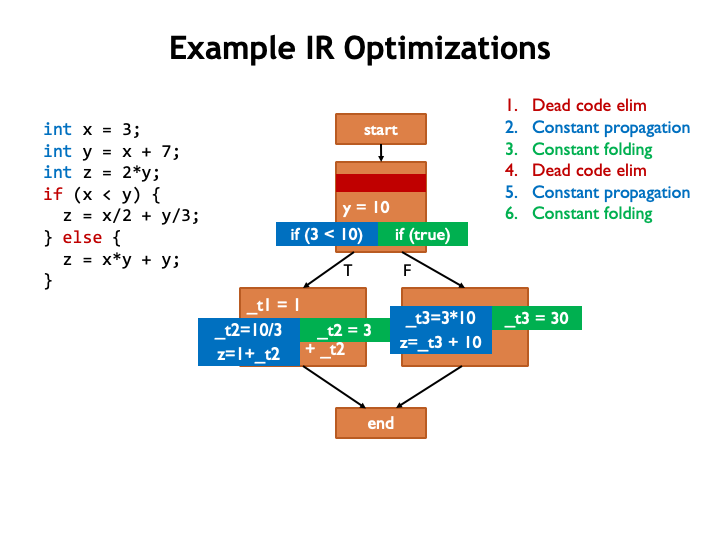
Hereʼs the updated CFG, ready for another round of optimizations.
First dead code elimination.
Then constant propagation.
And, finally, constant folding.
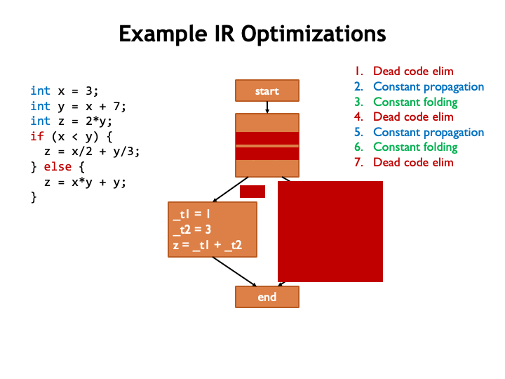
So after two rounds of these simple operations, weʼve thinned out a number of assignments. Onto round three!
Dead code elimination. And here we can determine the outcome of a conditional branch, eliminating entire basic blocks from the IR, either because theyʼre now empty or because they can no longer be reached.
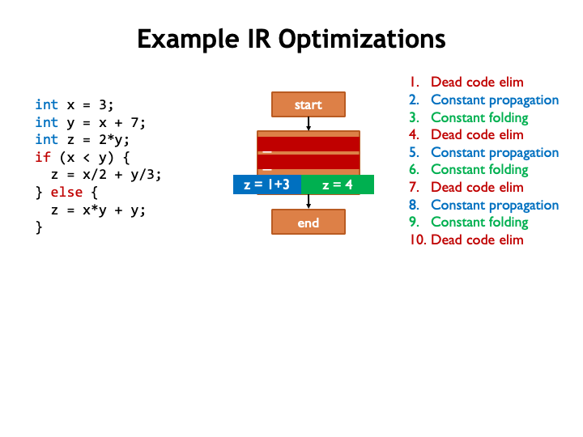
Wow, the IR is now considerably smaller.
Next is another application of constant propagation.
And then constant folding.
Followed by more dead code elimination.
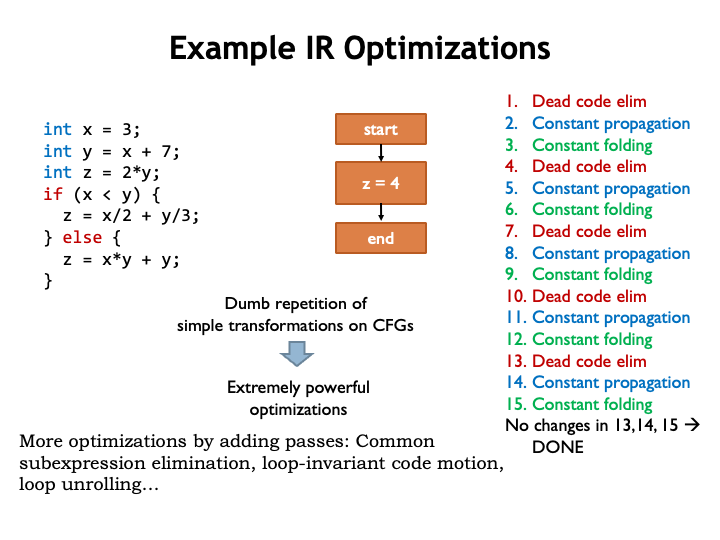
The passes continue until we discover there are no further optimizations to perform, so weʼre done!
Repeated applications of these simple transformations have transformed the original program into an equivalent program that computes the same final value for Z.
We can do more optimizations by adding passes: eliminating redundant computation of common subexpressions, moving loop-independent calculations out of loops, unrolling short loops to perform the effect of, say, two iterations in a single loop execution, saving some of the cost of increment and test instructions. Optimizing compilers have a sophisticated set of optimizations they employ to make smaller and more efficient code.
Code Generation
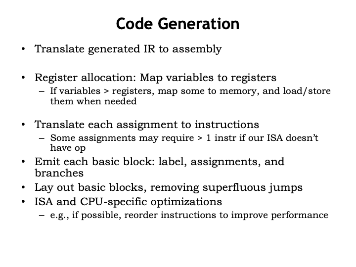
Okay, weʼre done with optimizations. Now itʼs time to generate instructions for the target ISA.
First the code generator assigns each variable a dedicated register. If we have more variables than registers, some variables are stored in memory and weʼll use LD and ST to access them as needed. But frequently-used variables will almost certainly live as much as possible in registers.
Use our templates from before to translate each assignment and operation into one or more instructions.
The emit the code for each block, adding the appropriate labels and branches.
Reorder the basic block code to eliminate unconditional branches wherever possible.
And finally perform any target-specific peephole optimizations.
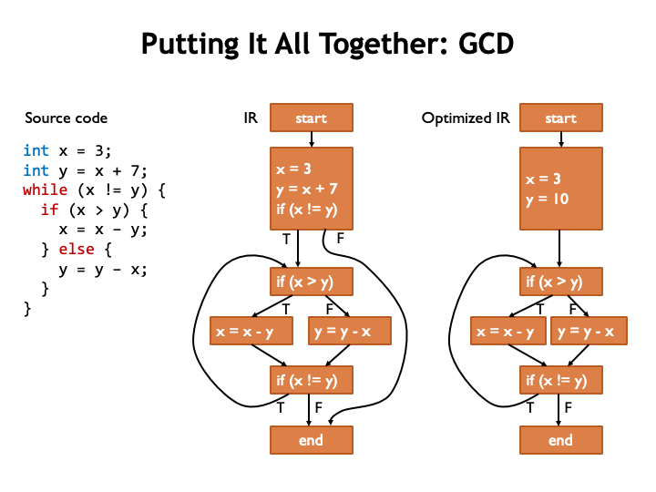
Hereʼs the original CFG for the GCD code, along with the slightly optimized CFG. GCD isnʼt as trivial as the previous example, so weʼve only been able to do a bit of constant propagation and constant folding.
Note that we canʼt propagate knowledge about variable values from the top basic block to the following “if” block since the “if” block has multiple predecessors.
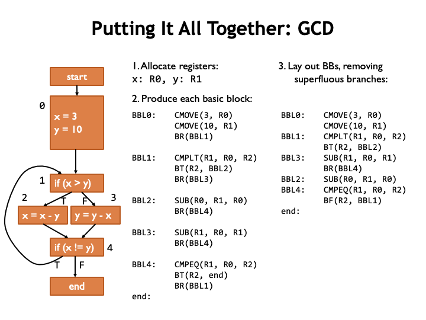
Hereʼs how the code generator will process the optimized CFG.
First, it dedicates registers to hold the values for x and y.
Then, it emits the code for each of the basic blocks.
Next, reorganize the order of the basic blocks to eliminate unconditional branches wherever possible.
The resulting code is pretty good. There no obvious changes that a human programmer might make to make the code faster or smaller. Good job, compiler!
Summary
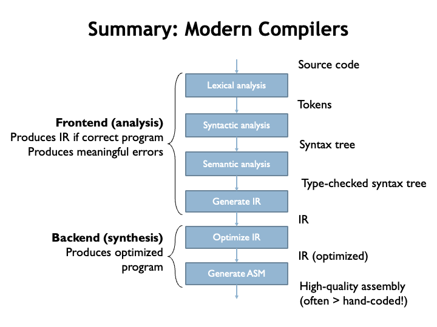
Here are all the compilation steps shown in order, along with their input and output data structures. Collectively they transform the original source code into high-quality assembly code. The patient application of optimization passes often produces code thatʼs more efficient than writing assembly language by hand.
Nowadays, programmers are able to focus on getting the source code to achieve the desired functionality and leave the details of translation to instructions in the hands of the compiler.